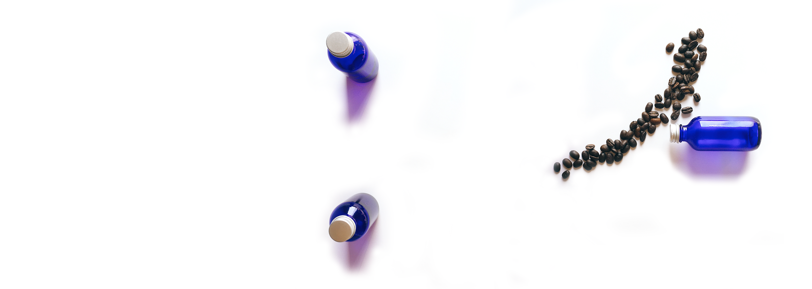

Steamm
Product Marketing Intern | Fall 2015
I directed, designed, and produced marketing content for Steamm, a small startup which successfully launched their product (bottled shots of espresso) in early 2016.


I worked with Steamm in the few months before their launch, providing creative direction in the imaging of their brand and product. Establishing the brand's blue and white minimalist theme, I captured their espresso bottle in a minimalist, clean style, all with my startup-friendly phone camera.
Back to home